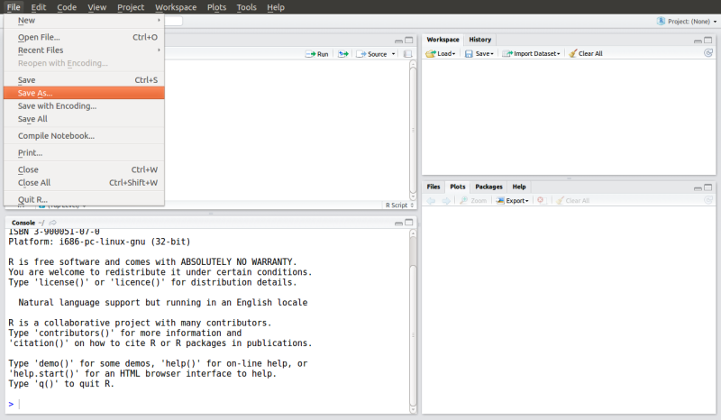
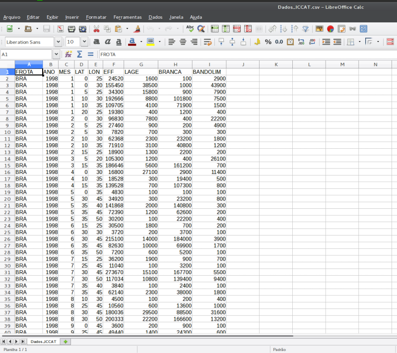

R: uma ferramenta de código aberto para análise de dados
Rodrigo Sant'Ana Fernando Mayer
UNIVALI/CTTMar/GEP UFPR/DEST/LEG
rsantana@univali.br fernandomayer@gmail.com
Introdução
Um breve histórico sobre o software R
Linguagem S: desenvolvida por R. Becker, J. Chambers e A. Wilks (AT&T Bell Laboratories);
Versão comercial: S-Plus (Insightful Corporation);
Versão livre: R desenvolvido por R. Ihaka e R. Gentleman (Universidade de Auckland);
R Development Core Team;
- 20 desenvolvedores principais e muitos outros colaboradores em todo o mundo;
- Core conta com Estatísticos, matemáticos e programadores;
- Colaboradores indiretos de diferentes áreas do saber.
- Core conta com Estatísticos, matemáticos e programadores;
O que é o R?
- Programa estatístico para análise de dados e produção gráfica;
- Uma completa linguagem de programação:
- Interpretada (contrário de compilada);
- Orientada a objetos;
- Interpretada (contrário de compilada);
"Tudo no R é um objeto..."
- Livre distribuição e código aberto;
- Mais de 6800 pacotes adicionais Pacotes R;
- Disponível em http://R-project.org;
- Versão atual: R-3.2.1 (18-06-2015);
- versões menores - lançamentos semestrais;
- versões maiores - lançamentos anuais.
- versões menores - lançamentos semestrais;
Vantagens
- É um software livre;
- Funciona em praticamente todos os sistemas operacionais existentes;
- Linux, FreeBSD, Macintosh e Windows;
- É um produto de cooperação entre estatísticos do mundo todo;
- Linguagem lógica e intuitiva;
- Flexibilidade nas análises estatísticas;
- Gráficos de alta qualidade;
- Pesquisas reproduzíveis.
Desvantagens
- Sem interface gráfica (?);
- Não há visualização direta dos dados;
- Curva de aprendizado longa;
- Pode ser lento com grandes bases de dados (alguns GB e/ou TB de dados);
- estes casos necessitam vetorização.
Configuração Inicial
Passo a passo para iniciar um trabalho com R:
Crie um diretório de trabalho onde serão armazenados os dados, códigos R e saídas das análises que serão realizadas nesta pesquisa;
Utilizando o menu do RStudio, direcione o software para a pasta recentemente criada. Para isto, clique em
Session >> Set Working Directory >> Choose Directory
e direcione sua escolha para pasta criada anteriormente.
- Para conferir o diretório que você está trabalhando, utilize a função do R "getwd()"
R source
getwd()R output
[1] "/media/Dados/Dropbox/Cursos/Ministrados/Curso_R_Intro_UNIVALI_2015"
Visão Geral - Entendendo o R
Prompt de comando ou console R
O símbolo ">" indica que o R está pronto para receber um novo comando. Ready to work!!
O símbolo no prompt de comando (ou console) do R muda de ">" para "+" para indicar ao usuário que o comando enviado está incompleto.

Teste em seu computador os seguintes comandos abaixo:
R source
## Somando escalares...
2 + 2R output
[1] 4
R source
## Múltiplicando escalares...
2 *
2R output
[1] 4
R source
## Dividindo escalares...
2 / 2R output
[1] 1
Notem que os espaços entre os números não fazem diferença para o R.
Editor de scripts
- Utilizado para criar rotinas computacionais de análises;
- Para acessar o editor de scripts do RStudio navegue pelo menu da aplicação, clicando em:
Arquivo >> Novo script.
nomeie conforme desejado e salve o script com a extensão .R;

Para envio rápido dos comandos digitados no "Editor de script" do RStudio diretamente para o "Console" do R é possível utilizar o atalho Ctrl + R;
Para adicionar comentários/anotações ao script que não fazem parte dos comandos utilizados nas análises, utiliza-se o símbolo "#" antes do texto desejado. O que estiver depois do símbolo não será interpretado pelo R. Portanto:
R source
2 + 2 ### Esta linha será executada, porém o comentário não.R output
[1] 4
R source
## 2 + 2 Esta linha será totalmente ignorada pelo R.Mecanismos de ajuda no R
Memorizar todos os comandos do R é praticamente impossível. Para auxiliar nesta tarefa, o R possui uma estrutura completa de pesquisa sobre temas correlatos às funções existentes em seus pacotes.
A função "help.search()" ajuda o usuário na busca por um determinado tema de interesse dentro da base do R ou em um pacote adicional específico. Trata-se de uma pesquisa às bases de documentos do R através de uma pesquisa por palavra-chave (em inglês).
R source
### Pesquisa utilizando a função completa
help.search("linear models")
### Pesquisa utilizando a função resumida
??"linear models"Ou ainda, podemos pesquisar sobre uma função ou comando de nome conhecido, através da função "help()" presente no software R.
R source
### Pesquisa utilizando a função completa
help(mean)
### Pesquisa utilizando a função resumida
?meanOutras formas de pesquisa no R, que podem auxiliar bastante no dia-a-dia são:
- Ajuda através do navegador (contendo também os manuais dos pacotes e funções);
R source
help.start()- Busca por tema ou palavra nos arquivos da lista de discussão do R na World Wide Web.
R source
RSiteSearch("linear models")Orientação a objetos no R
O que é um objeto no R?
- Um símbolo ou uma variável capaz de armazenar qualquer valor ou estrutura de dados no R.
Por quê objetos?
- Uma maneira simples de acessar os dados armazenados na memória da CPU (o R não permite acesso direto à memória).
R source
### Atribuindo um valor ao objeto "x". x recebe o valor 2.
x <- 2
### Realizando uma operação de adição entre o objeto x e o escalar 2.
x + 2R output
[1] 4
R source
### Qual o valor de x?
xR output
[1] 2
Estrutura de dados no R
Estrutura de programação no R:
- Objetos -> Classes -> Métodos
"Tudo no R é um objeto."
"Todo objeto no R tem uma classe"
Classe é a definição de um objeto. Descreve a forma do objeto e como ele será manipulado pelas diferentes funções do R.
Método são funções genéricas que executam suas tarefas de acordo com a classe de cada objeto.
A organização dos dados no R podem ser organizadas de maneiras distintas, as principais estruturas existentes são:
| Estrutura | Descrição | Função |
|---|---|---|
| vector | Vetor de dados com um ou mais elementos de mesmo tipo | "c()" |
| matrix | Matriz de dados com duas dimensões e um único tipo de dado | "matrix()" |
| data.frame | Similar à estrutura da matriz, porém permite colunas com diferentes tipos de dados | "data.frame()" |
| list | Objeto que permite combinar diferentes estruturas de dados em um único objeto | "list()" |
R source
### Exemplo de vetor no R
vet <- c(2, 3, 55, -4)
vetR output
[1] 2 3 55 -4
R source
### Exemplo de matriz no R
mat <- matrix(c(2, 0, 10, -5), nrow = 2)
matR output
[,1] [,2]
[1,] 2 10
[2,] 0 -5
R source
### Exemplo de data frame no R
dat <- data.frame(local = c("A", "B", "C"), N = c(10, 24, 5))
datR output
local N
1 A 10
2 B 24
3 C 5
R source
### Exemplo de list no R
lst <- list(vet, mat, dat)
lstR output
[[1]]
[1] 2 3 55 -4
[[2]]
[,1] [,2]
[1,] 2 10
[2,] 0 -5
[[3]]
local N
1 A 10
2 B 24
3 C 5
Tipos de dados no R
No R, os dados podem assumir diferentes tipos, tais como:
| Tipo | Descrição |
|---|---|
| character | Texto ou caracter |
| numeric | Números inteiros ou reais |
| logical | Booleano ou Verdadeiro/Falso (TRUE/FALSE) |
| complex | Números complexos |
| date | Datas |
| factor | Texto ou caracter estruturado em níveis |
Nomeando os objetos no R
Dicas e considerações importantes para nomenclatura de objetos no R:
- Os objetos podem ser formados por letras, números e ".", "_", "-";
- Não podem iniciar com números e/ou ".", "_", "-";
- Não podem conter espaços;
- Evite, ao máximo, utilizar acentos;
- Evite também o uso de nomes de funções do R, tais como: c q t C D F I T diff df data var pt
- O R é case-sensitive, portanto:
dados ≠ Dados ≠ DADOS
Listando e removendo objetos da área de trabalho do R
Uma vez que temos inúmeros objetos criados em nossa área de trabalho do R, podemos listar e observar este objeto. O comando que auxilia nesta tarefa é o "ls()", abreviação da palavra (em inglês) list.
R source
### Criando alguns objetos
x <- 2
y <- 3
z <- 4
### Listando objetos já existentes em nossa área de trabalho
ls()R output
[1] "dados" "dat" "lst" "mat" "vet" "x" "y" "z"
E o que acontece se atribuirmos um novo valor à um objeto que já existe em nossa área de trabalho?
R source
### Atribuindo um novo valor para x
x <- 362
### Imprimindo o objeto x
xR output
[1] 362
E para remover objetos desnecessários existentes em nossa área de trabalho? o comando "rm()", abreviação da palavra inglesa remove é utilizado para este fim. Para usá-lo, basta fornecer o nome do objeto a ser removido, exemplo:
R source
### Removendo o objeto x da lista de objetos existentes na área de
### trabalho do R
rm(x)Prática com R
- Crie um objeto de nome x no R e armazene neste o resultado da seguinte equação: 32 + 16^2 - 25^3;
Importante:
| Operador | Significado |
|---|---|
| + | adição |
| - | subtração |
| * | multiplicação |
| / | divisão |
| ^ | potência |
| exp() | exponencial |
| sqrt() | raíz quadrada |
| factorial() | fatorial |
| log() | logaritmo |
Divida x por 345 e armazene este novo resultado em um novo objeto chamado y.
Visualize os valores armazenados nos objetos x e y criados anteriormente, confira se os valores alcançados foram -15337 para x e -44,45507.
Por fim, remova os objetos x e y de sua área de trabalho.
Carregando dados no R
Existem inúmeras formas de carregar/importar dados para o R. A maneira mais simples e comum é utilizar uma Planilha Eletrônica para armazenamento das informações, estruturando as variáveis em colunas e as observações em linhas.

Esta planilha deve ser salva no formato csv, arquivo de texto separado por virgula, e na mesma pasta criada para armazenar os arquivos que farão parte do escopo do trabalho em questão. Com isso, no R, o comando para importação é o "read.table()".
R source
### Importando uma planilha de dados para o R.
dados <- read.table("Dados_ICCAT.csv", header = TRUE, sep = ";",
dec = ",")Visualizando os dados importados no R
Como visto antes, uma desvantagem do R é a não visualização em tempo real dos seus dados. Uma alternativa é utilizar a função ou comando "head()" do R. Este comando retorna as 6 primeiras linhas do objeto desejado.
R source
### Visualizando as 6 primeiras linhas do objeto "dados" criado
### anteriormente.
head(dados)R output
FROTA ANO MES LAT LON EFF LAGE BRANCA BANDOLIM
1 BRA 1998 1 0 25 24520 1600 100 2900
2 BRA 1998 1 0 30 155450 38500 1000 43900
3 BRA 1998 1 5 25 34300 15800 900 7900
4 BRA 1998 1 10 30 192666 8800 101800 7500
5 BRA 1998 1 10 35 109705 4100 71900 1500
6 BRA 1998 1 20 25 19380 400 1200 400
Lembrando que todo objeto tem uma classe no R, como visualizar o tipo de classe do objeto dados? A função "class()" do R auxilia nisto. Recordando ainda que, cada variável possui um tipo, como visualizar os tipos de dados presentes em nosso objeto? Ou melhor, como que o R interpretou os dados importados da Planilha Eletrônica? O comando "str()" é uma alternativa para esta compreensão.
R source
### Visualizando a classe do objeto dados.
class(dados)R output
[1] "data.frame"
R source
### Visualizando a estrutura dos dados presentes no objeto dados.
str(dados)R output
'data.frame': 540 obs. of 9 variables:
$ FROTA : Factor w/ 2 levels "BRA","BRA-ESP": 1 1 1 1 1 1 1 1 1 1 ...
$ ANO : int 1998 1998 1998 1998 1998 1998 1998 1998 1998 1998 ...
$ MES : int 1 1 1 1 1 1 2 2 2 2 ...
$ LAT : int 0 0 5 10 10 20 0 5 5 10 ...
$ LON : int 25 30 25 30 35 25 30 25 30 30 ...
$ EFF : int 24520 155450 34300 192666 109705 19380 96830 27460 7820 62368 ...
$ LAGE : num 1600 38500 15800 8800 4100 400 7800 900 700 2300 ...
$ BRANCA : num 100 1000 900 101800 71900 ...
$ BANDOLIM: num 2900 43900 7900 7500 1500 400 22200 4900 300 1800 ...
Uma alternativa mais informativa, porém ainda rápida, pode ser acessada pela função "summary()" do R. Esta função traz um sumário estatístico de cada variável presente no objeto, respeitando as respectivas tipificações.
R source
### Sumário das variáveis presentes no objeto dados.
summary(dados)R output
FROTA ANO MES LAT
BRA :379 Min. :1998 Min. : 1.000 Min. : 0.00
BRA-ESP:161 1st Qu.:1999 1st Qu.: 4.000 1st Qu.: 0.00
Median :2001 Median : 7.000 Median :10.00
Mean :2001 Mean : 7.206 Mean :13.83
3rd Qu.:2003 3rd Qu.:10.000 3rd Qu.:25.00
Max. :2004 Max. :12.000 Max. :35.00
LON EFF LAGE BRANCA
Min. : 0.00 Min. : 750 Min. : 13 Min. : 11.6
1st Qu.:28.75 1st Qu.: 6400 1st Qu.: 361 1st Qu.: 137.2
Median :30.00 Median : 16012 Median : 1225 Median : 551.9
Mean :34.00 Mean : 31668 Mean : 187912 Mean : 8983.4
3rd Qu.:45.00 3rd Qu.: 36200 3rd Qu.: 4570 3rd Qu.: 2366.3
Max. :50.00 Max. :430002 Max. :19908792 Max. :381488.0
BANDOLIM
Min. : 7
1st Qu.: 141
Median : 617
Mean : 157593
3rd Qu.: 2828
Max. :21794084
NA's :8
Manipulação de dados
Indexação
Como visualizar posições específicas em nossos dados? O R, assim como outras linguagens de programação científica, trabalha com indexação algébrica, ou seja, orientação de posicionamento por indexação de vetores e matrizes.
Assim, em um vetor de dados (estrutura unidimensional) cada uma das observações presentes neste vetor possui um índice de posição único. Exemplo:
R source
### Vetor com 10 valores inteiros
vet <- c(1, 2, 5, 10, 9, 7, 3, 8, 6, 4)
### Qual o valor na posição 4?
vet[4]R output
[1] 10
R source
### Qual o valor na posição 9?
vet[9]R output
[1] 6
No caso de uma matriz de dados (estrutura bidimensional) cada uma das observações presentes nesta matriz possui um índice composto de indicador de linha e indicador de coluna. Exemplo:
R source
### Matriz com os mesmos valores presentes no vetor "vet".
mat <- matrix(vet, nrow = 5)
### Qual o valor presente na linha 2 e coluna 2?
mat[2, 2]R output
[1] 3
R source
### Qual o valor presente na linha 5 e coluna 2?
mat[5, 2]R output
[1] 4
R source
### Quais os valores presentes na linha 5 em todas as colunas?
mat[5,]R output
[1] 9 4
R source
### Quais os valores presentes em todas as linhas da coluna 1?
mat[,1]R output
[1] 1 2 5 10 9
O mesmo comportamento observado na indexação de matrizes pode ser utilizado para objetos da classe data.frame.
R source
### Utilizando o objeto dados importado anteriormente, qual o valor da
### linha 2 e coluna 3
dados[2,3]R output
[1] 1
R source
### Qual os valores da coluna 3 em todas as linhas
dados[,3]R output
[1] 1 1 1 1 1 1 2 2 2 2 2 2 3 3 4 4 4 5 5 5 5 5 6
[24] 6 6 6 6 7 7 7 7 7 7 8 8 8 8 9 9 9 9 9 10 10 10 10
[47] 10 10 10 10 10 11 11 11 11 11 11 11 11 11 12 12 12 12 12 12 12 1 1
[70] 2 2 2 2 2 2 3 3 3 3 3 3 3 4 4 4 4 4 4 4 5 5 5
[93] 5 5 5 6 6 6 6 6 6 7 7 7 8 8 8 8 8 8 9 9 9 9 9
[116] 9 9 10 10 10 10 10 10 10 10 11 11 11 11 11 11 12 12 12 12 12 12 1
[139] 1 1 2 2 2 2 3 3 3 3 4 4 5 5 5 5 5 6 6 6 7 7 7
[162] 7 7 7 8 8 9 9 9 9 10 10 10 10 11 11 11 11 12 12 12 12 1 1
[185] 1 1 2 2 2 2 2 3 3 3 3 4 4 4 5 5 5 6 7 9 10 10 11
[208] 12 2 2 2 2 2 3 3 3 3 3 3 3 3 3 3 3 3 4 4 4 4 4
[231] 4 5 5 5 6 6 6 7 7 7 8 8 8 8 9 9 9 9 10 10 10 11 11
[254] 11 11 12 12 9 9 9 10 11 11 11 12 12 12 1 1 2 2 3 4 4 4 5
[277] 5 5 6 6 6 7 7 7 8 8 8 9 9 9 9 10 10 11 11 11 5 7 7
[300] 8 8 9 9 10 11 11 11 11 12 4 4 5 5 6 6 6 8 8 9 10 11 11
[323] 12 1 1 1 10 10 10 11 11 11 11 12 12 12 12 12 4 4 5 5 6 6 6
[346] 7 7 7 8 8 9 9 9 9 10 10 11 12 12 1 1 2 2 3 4 4 5 5
[369] 5 6 6 7 7 7 8 8 9 9 10 10 10 11 11 12 12 12 12 7 5 5 6
[392] 7 8 9 2 4 2 4 8 8 9 9 9 9 10 10 10 10 10 11 11 11 11 11
[415] 11 11 12 12 12 12 2 4 4 6 7 8 8 10 11 11 11 11 11 12 12 1 2
[438] 2 2 3 4 5 5 6 6 6 7 7 8 8 8 8 9 9 9 10 10 10 11 11
[461] 11 11 12 6 6 6 6 7 7 7 7 7 7 8 8 10 11 11 11 12 12 12 12
[484] 1 1 2 2 4 4 4 4 5 5 5 5 5 5 6 6 6 6 6 6 7 7 7
[507] 7 7 8 9 9 9 10 10 10 10 10 11 11 11 11 11 11 11 11 12 12 12 1
[530] 1 1 6 6 7 8 9 9 11 12 12
No entanto, objetos da classe data.frame tem uma alternativa melhor para indexação de valores. O nome das variáveis. As colunas de um data.frame podem ser acessadas com o auxilio do símbolo $. Exemplo:
R source
### Quais os valores da coluna 3 do objeto dados? Para responder,
### precisamos saber qual o nome da coluna 3, para visualizar os nomes
### das colunas de um objeto temos duas alternativas: 1) utilizar a
### função head() como vimos antes, ou; 2) utilizar a função names() que
### traz um vetor com os nomes das variáveis.
### Utilizando a função head
head(dados)R output
FROTA ANO MES LAT LON EFF LAGE BRANCA BANDOLIM
1 BRA 1998 1 0 25 24520 1600 100 2900
2 BRA 1998 1 0 30 155450 38500 1000 43900
3 BRA 1998 1 5 25 34300 15800 900 7900
4 BRA 1998 1 10 30 192666 8800 101800 7500
5 BRA 1998 1 10 35 109705 4100 71900 1500
6 BRA 1998 1 20 25 19380 400 1200 400
R source
### Utilizando a função names
names(dados)R output
[1] "FROTA" "ANO" "MES" "LAT" "LON" "EFF"
[7] "LAGE" "BRANCA" "BANDOLIM"
R source
### Coluna 3 = MES, quais os valores da coluna MES do objeto dados
### então?
dados$MESR output
[1] 1 1 1 1 1 1 2 2 2 2 2 2 3 3 4 4 4 5 5 5 5 5 6
[24] 6 6 6 6 7 7 7 7 7 7 8 8 8 8 9 9 9 9 9 10 10 10 10
[47] 10 10 10 10 10 11 11 11 11 11 11 11 11 11 12 12 12 12 12 12 12 1 1
[70] 2 2 2 2 2 2 3 3 3 3 3 3 3 4 4 4 4 4 4 4 5 5 5
[93] 5 5 5 6 6 6 6 6 6 7 7 7 8 8 8 8 8 8 9 9 9 9 9
[116] 9 9 10 10 10 10 10 10 10 10 11 11 11 11 11 11 12 12 12 12 12 12 1
[139] 1 1 2 2 2 2 3 3 3 3 4 4 5 5 5 5 5 6 6 6 7 7 7
[162] 7 7 7 8 8 9 9 9 9 10 10 10 10 11 11 11 11 12 12 12 12 1 1
[185] 1 1 2 2 2 2 2 3 3 3 3 4 4 4 5 5 5 6 7 9 10 10 11
[208] 12 2 2 2 2 2 3 3 3 3 3 3 3 3 3 3 3 3 4 4 4 4 4
[231] 4 5 5 5 6 6 6 7 7 7 8 8 8 8 9 9 9 9 10 10 10 11 11
[254] 11 11 12 12 9 9 9 10 11 11 11 12 12 12 1 1 2 2 3 4 4 4 5
[277] 5 5 6 6 6 7 7 7 8 8 8 9 9 9 9 10 10 11 11 11 5 7 7
[300] 8 8 9 9 10 11 11 11 11 12 4 4 5 5 6 6 6 8 8 9 10 11 11
[323] 12 1 1 1 10 10 10 11 11 11 11 12 12 12 12 12 4 4 5 5 6 6 6
[346] 7 7 7 8 8 9 9 9 9 10 10 11 12 12 1 1 2 2 3 4 4 5 5
[369] 5 6 6 7 7 7 8 8 9 9 10 10 10 11 11 12 12 12 12 7 5 5 6
[392] 7 8 9 2 4 2 4 8 8 9 9 9 9 10 10 10 10 10 11 11 11 11 11
[415] 11 11 12 12 12 12 2 4 4 6 7 8 8 10 11 11 11 11 11 12 12 1 2
[438] 2 2 3 4 5 5 6 6 6 7 7 8 8 8 8 9 9 9 10 10 10 11 11
[461] 11 11 12 6 6 6 6 7 7 7 7 7 7 8 8 10 11 11 11 12 12 12 12
[484] 1 1 2 2 4 4 4 4 5 5 5 5 5 5 6 6 6 6 6 6 7 7 7
[507] 7 7 8 9 9 9 10 10 10 10 10 11 11 11 11 11 11 11 11 12 12 12 1
[530] 1 1 6 6 7 8 9 9 11 12 12
R source
### Qual o valor da segunda linha da coluna ANO do objeto dados?
dados$ANO[2]R output
[1] 1998
Seleção condicional
Pensando no exemplo da objeto "dados", se quisessemos criar uma nova variável - "Trimestre", como poderíamos fazer isto?
R source
### Criando a nova variável no objeto dados, chamada Trimestre e
### preenchendo as observações com o valor 1
dados$Trimestre <- 1
### Considerando que o segundo Trimestre de cada ano é composto pelos
### meses 4, 5 e 6, poderíamos implementar uma seleção condicional, de
### forma que a coluna Trimestre, onde os meses foram iguais a 4, 5 e 6
### receba o valor 2.
dados$Trimestre[dados$MES == 4 | dados$MES == 5 | dados$MES == 6] <- 2
### Repetindo esta mesma lógica para os demais trimestres, temos a
### variável trimestre criada em nossa base de dados.
dados$Trimestre[dados$MES == 7 | dados$MES == 8 | dados$MES == 9] <- 3
dados$Trimestre[dados$MES == 10 | dados$MES == 11 | dados$MES == 12] <- 4Estatística Descritiva
Observando medidas de centro - Média e Mediana
R source
### Média e mediana das capturas de Albacora Lage
mean(dados$LAGE)R output
[1] 187911.7
R source
median(dados$LAGE)R output
[1] 1224.875
R source
### Média e mediana das capturas de Albacora Branca
mean(dados$BRANCA)R output
[1] 8983.383
R source
median(dados$BRANCA)R output
[1] 551.85
R source
### Média e mediana das capturas de Albacora BANDOLIM - Ops!!!
mean(dados$BANDOLIM)R output
[1] NA
R source
median(dados$BANDOLIM)R output
[1] NA
Na presença de dados faltantes em nossa base de dados, o R por padrão retorna a indicação desta inconsistência em nossos dados. Para contornarmos este problema, grande parte das funções do R possuem o argumento "na.rm" para resolver esta particularidade.
R source
### Média e mediana das capturas de Albacora BANDOLIM - Ops!!!
mean(dados$BANDOLIM, na.rm = TRUE)R output
[1] 157592.6
R source
median(dados$BANDOLIM, na.rm = TRUE)R output
[1] 617.3543
E se quisessmos calcular a média das capturas das três espécies trimestralmente, como poderíamos fazer isto de forma rápida?
R source
### Calculando a média das capturas das três espécies por trimestre.
aggregate(cbind(LAGE, BRANCA, BANDOLIM) ~ Trimestre, data = dados,
FUN = mean, na.rm = TRUE)R output
Trimestre LAGE BRANCA BANDOLIM
1 1 399425.435 15038.360 654961.18
2 2 18015.208 8454.918 103212.43
3 3 3830.654 8512.393 26121.55
4 4 326068.234 6722.798 18578.37
Aumentando a estratificação da estimação, se quisessemos estimar agora a média das capturas de Albacora bandolim por ANO e TRIMESTRE?
R source
### Calculando a média das capturas de Albacora bandolim por ANO e
### TRIMESTRE.
tapply(dados$BANDOLIM, list(dados$ANO, dados$Trimestre),
FUN = mean, na.rm = TRUE)R output
1 2 3 4
1998 8113.3333 2256.2500 3861.1111 4248.4848
1999 2162.9443 639.9778 800.7783 612.6617
2000 5401.1945 1792.1800 695.1383 4211.0580
2001 3758321.1071 554525.2439 296420.7782 137923.6190
2002 911.5665 2210.8414 1713.9924 746.1188
2003 848.5000 719.8235 1028.5909 1987.1176
2004 6477.8571 1709.0000 3464.9615 5862.5667
Poderíamos aumentar ainda mais a estratificação das estimações, colocando mais uma dimensão na solicitação, estimando agora a captura média de Albacora branca por ANO, MES e FROTA.
R source
### Calculando a média das capturas de Albacora branca por ANO, MES e
### FROTA.
tapply(dados$BRANCA, list(dados$ANO, dados$MES, dados$FROTA),
FUN = mean, na.rm = TRUE)R output
, , BRA
1 2 3 4 5 6
1998 29483.3333 11183.3333 80800.0000 43200.0000 49780.0000 52700.0000
1999 2561.3900 287.8183 642.4171 711.9571 683.8100 948.4483
2000 522.4367 1186.2175 987.6200 128.8200 240.4640 291.5400
2001 10395.4350 55672.4219 129804.5690 40177.1500 13559.9247 333.2935
2002 NA 66.6700 246.7625 652.7450 5938.5500 5237.4497
2003 105.5000 41.0000 114.0000 1084.2000 1676.5000 1408.5000
2004 609.0000 1305.5000 136.0000 545.5000 364.5714 1022.0000
7 8 9 10 11 12
1998 58600.000 67225.000 11460.0000 22644.4444 40444.4444 43585.7143
1999 1665.097 1079.802 317.8971 279.6087 453.9417 367.0167
2000 1791.615 884.790 206.5075 590.9900 757.1000 2897.8850
2001 196055.000 NA 197.7500 512.6527 137.2385 1817.0400
2002 6989.966 2175.883 2368.0319 184.1167 326.4875 15.0000
2003 2977.400 1515.286 851.3000 739.4000 1039.3333 612.8000
2004 639.875 1017.000 635.7143 1088.0000 2017.0000 587.6667
, , BRA-ESP
1 2 3 4 5 6 7 8
1998 NA 2200.00 NA 1750.000 NA 700.0000 900.000 150.00
1999 31010.0000 1595.00 100 40.000 70.0 230.3333 722.500 1356.00
2000 NA NA NA NA NA 27040.9000 14846.505 14166.81
2001 44478.4950 29925.22 NA 5053.925 2248.7 2888.4683 2046.204 84.75
2002 3291.3133 NA NA NA NA 79.1000 237.300 1609.12
2003 841.6667 NA NA NA NA NA NA NA
2004 NA 210.00 NA 205.000 NA NA NA 152.50
9 10 11 12
1998 NA 100.0000 300.000 2800.000
1999 1531.667 1006.6667 2534.750 450.000
2000 NA 96.0500 7727.693 28698.327
2001 1516.460 1588.1020 2152.791 4434.873
2002 1346.395 NA 42.940 968.975
2003 NA 153.3333 420.000 3110.400
2004 922.000 2012.4000 1793.143 337.500
Observando medidas de variação - Desvio padrão, Variância, Coeficiente de variação.
R source
### Desvio padrão
sd(dados$BRANCA)R output
[1] 32195.51
R source
### Variância
var(dados$BRANCA)R output
[1] 1036551058
R source
sd(dados$BRANCA)^2R output
[1] 1036551058
R source
### Coeficiente de variação
sd(dados$BRANCA)/mean(dados$BRANCA)R output
[1] 3.583896
Observando medidas de posição relativa - Quartís e Decís.
R source
### Quartís
quantile(dados$BRANCA)R output
0% 25% 50% 75% 100%
11.5900 137.2385 551.8500 2366.3364 381488.0000
R source
### Decís
quantile(dados$BRANCA, probs = seq(0, 1, 0.1))R output
0% 10% 20% 30% 40% 50%
11.5900 42.9400 100.0000 200.0000 353.5700 551.8500
60% 70% 80% 90% 100%
929.7766 1721.8940 3204.4860 11475.4561 381488.0000
Observando resumo dos dados em termos de quantificações (contagens) por fatores ou observações - Tabelas de contingência.
R source
### Tabela de contingência
table(dados$FROTA)R output
BRA BRA-ESP
379 161
R source
### Tabela de contingência cruzada
table(dados$FROTA, dados$Trimestre)R output
1 2 3 4
BRA 80 95 98 106
BRA-ESP 18 33 39 71
R source
table(dados$ANO, dados$MES)R output
1 2 3 4 5 6 7 8 9 10 11 12
1998 6 7 2 5 5 6 7 6 5 10 14 9
1999 3 9 8 8 8 9 5 10 10 11 10 7
2000 3 4 4 2 5 7 12 4 4 5 7 8
2001 6 7 4 7 9 7 6 1 4 7 9 4
2002 3 5 12 6 3 5 4 5 6 3 5 4
2003 5 2 1 5 6 6 5 7 10 8 16 10
2004 2 4 1 6 7 6 8 7 11 10 10 10
Transformando tabelas de contingências em observações gráficas.
R source
barplot(table(dados$Trimestre, dados$ANO), beside = T)![]()
R source
mosaicplot(table(dados$Trimestre, dados$ANO))![]()
R source
table(dados$ANO, dados$Trimestre, dados$FROTA)R output
, , = BRA
1 2 3 4
1998 14 13 15 25
1999 15 19 16 20
2000 11 10 12 12
2001 13 7 2 4
2002 17 12 11 9
2003 5 17 22 22
2004 5 17 20 14
, , = BRA-ESP
1 2 3 4
1998 1 3 3 8
1999 5 6 9 8
2000 0 4 8 8
2001 4 16 9 16
2002 3 2 4 3
2003 3 0 0 12
2004 2 2 6 16
R source
mosaicplot(table(dados$ANO, dados$Trimestre, dados$FROTA))![]()